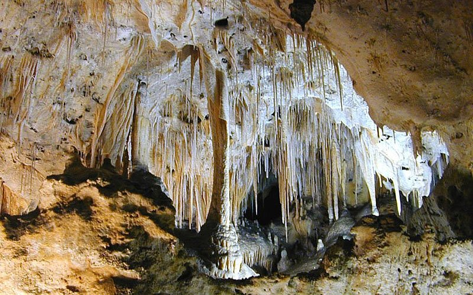

Famous Places
Unakoti Rock Carvings

Unakoti famously known as Angkor Wat of the North-East, is a sculptural emblem and ancient Shaivite place that hosts rock carvings, figures and images of gods and goddesses. It is a place of worship with huge rock reliefs celebrating Shiva.
Neermahal Palace
Neermahal also known as Twijilikma Nuyung is a former royal palace of Tripura Kingdom, built by Maharaja Bir Bikram Kishore Manikya bahadur in 1930. It is also the largest water palace in India. The palace is situated in the middle of Rudrasagar Lake ( Twijilikma ), in Melaghar 53 kilometers away from Agartala, the capital of Tripura.